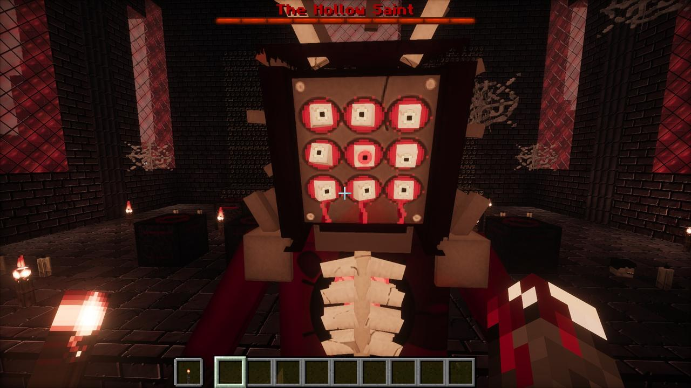

- Summoned at
- The Hollow Reliquary, with one head of each of the nine creepypastas
- Size
- Five blocks tall
- Health
- 500
- Phases
- Two: its first form, and its dark form from half health
- Drops
- The Saint's Heart, 4 to 5 Saint's Shrouds, and by chance gold ingots (60%), a totem of undying (25%) or an enchanted golden apple (5%). It has no head to drop.

Summoning it
In the cathedral's sanctuary, put one head from each of the nine different creepypastas on the nine pedestals round the Hollow Reliquary, then right-click the reliquary with an empty hand.
The summoning takes about ten seconds and it can't be hurt until it has fully risen. The floor goes dark and a circle of runes burns open; a beam of light streams out of every head into an orb over the reliquary; souls and embers pour in and lightning crawls over it; the floor cracks and red light comes up through it. Then the Saint rises up out of the ground into the light, slowly, and roars with many dead voices at once: a flash, rings of light, a pillar into the sky, and everything nearby thrown back into darkness.
Description
It stands five blocks tall in a deep cowl. Its iron mask is a grid bolted over raw flesh, with nine real eyes bulging out of their square sockets that roll on their own and all turn to fix on you when you look at it. Under the mask a jaw drops open on long teeth. Its robe, in a blood red trimmed with tarnished gold, is torn open over its ribs and the heart beating behind them. Vertebrae break out of its back. It wears an antler crown and a halo of rusted spikes, and it has four arms.
Sewn into the robe are the faces of the nine, each one straining out of the cloth, twitching, its mouth falling open. In the dark its eyes, its mouth, its heart and the faces' eyes burn. Its heartbeat booms across the cathedral while it lives.
How it fights
- Calls the nine. A red-black portal tears open in the ground for each creepypasta it calls, and it claws its way up out of it to fight beside the Saint.
- Screams static that blinds you and throws you back.
- From half health it starts teleporting behind you and calling lightning down on everyone.
- Bleeding III makes it reel for a moment: it staggers and doubles over, and blood pours out of the wound in its gut.
At half health, it changes
It freezes and rises off the ground, arms flung wide, every face on it screaming. The Watcher hanging from the ceiling turns to it, a black sun swelling between its hands, and pours a crackling river of shadow down into the Saint's heart. A rune circle burns into the ground under it and spins faster and faster, the faces tear loose from its robe one by one and rise, screaming, and the air goes violet-black. Nothing you do can hurt it now.
Then it bursts: a flash, a pillar of light, shockwaves along the ground, its ribs blown out in shards, and the whole world kicks.
Its dark form
It drops back down charred black and cracked with burning light, every eye red, its ribs wrenched open, and its heart pushed out of its chest, turned black and veined with violet light. The boss bar turns purple. From here it is faster, teleports behind you in a burst of shadow, calls lightning down, and uses its dark magic:
Abyssal Rupture
It raises all four arms and a violet circle burns open under every player near it, spinning faster and crackling for a second and a half. Then a pillar of black-violet power erupts out of each one: 12 damage, flung into the air, and darkness. Get out of the circle.
How to survive it
- Bring the chapter's gear. The Static Mail's full set makes creepypastas within 32 blocks glow through walls, which helps against the ones it calls up.
- The Saint's Requiem is made from its own heart, so it can't help you here, but the Sinew Cleaver's Rend stacks Bleeding, and Bleeding III makes the Saint reel.
- Watch the floor in its dark form: a violet circle under your feet means move now.
- It teleports behind you from half health. Keep turning.
Its end
When it dies, the Watcher won't let it stay. Its beam turns red and burns the ground open under the Saint: a portal to hell, ringed with burning runes. The Saint tries to claw its way up into the air, every arm reaching, and a huge burning hand rises out of the portal and closes round it. Twice it shoves the fingers apart and drags itself half out; twice the hand clenches and yanks it back. Then it is dragged down through the hole, screaming, and the portal slams shut in a blast of fire.
The chat reads The Hollow Saint has fallen. It leaves the Saint's Heart, a real heart still beating in your hand, on the ground and in an item frame. Since 1.40, its tomb in the cathedral's undercroft stands empty, the gate forced from the inside and its chains broken.
do you understand what you've done? they were keeping it in.
it was the only thing in this world bigger than me.
Field notes
The priest's journal in the undercroft says the Saint lay sealed in its tomb "under nine chains and nine candles, one for each of the heads they took to make it", and that he kept the candles burning forty years. Read his journal and the bell-ringer's tally.
Turned
Since 1.51.0 the parasite can take it. Turned, it's the Saint Unmade: dragging itself on tentacles, its chest a mouth the height of it. The Projectionist's reruns bring back its shadow beam, and the Hub's replay portal for The Hollow raises it out of the floor again.